Объекты файловой системы и их свойства.
Хранение информационных объектов различных видов на различных цифровых носителях
Цели
- Дать определение объектам файловой системы
- Рассмотреть способы хранения данных на различных носителях
Инструменты:
- ОС Windows
- Браузер
- files.exe
Задание 1. Запишите, какие внешние запоминающие устройства соответствуют логическим дискам в Windows(какие буквы соотвествют устройствам)
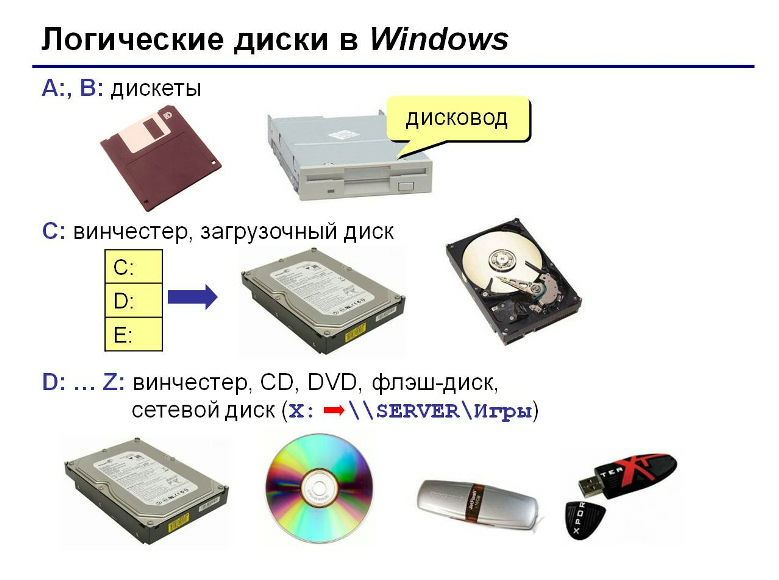
Задание 2. Запишите, каким образом файлы
размещаются на дисках
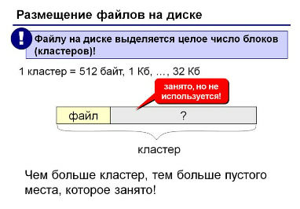
Жёсткий диск
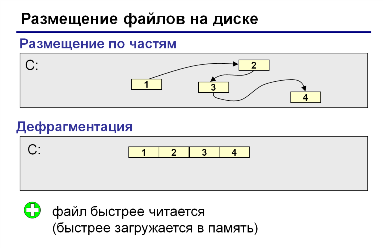
Устройство жёсткого диска
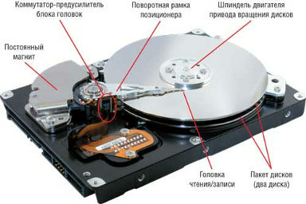
Основные причины потери данных с ВЗУ
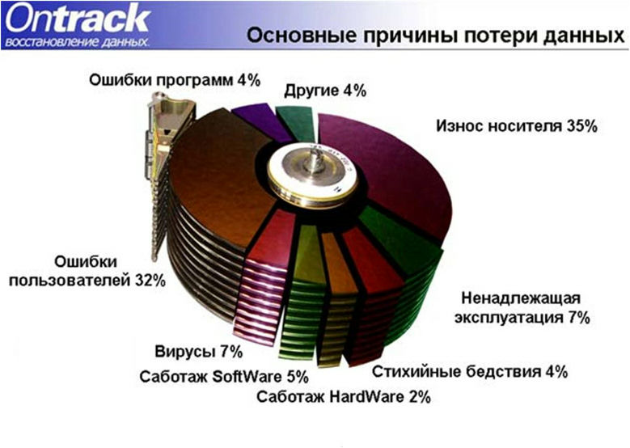
Задание 3. Оформите в конспект ответы на вопросы
3.1
Что означает расширения файла? 3.2
Для чего нужно расширение файла? 3.3
Как влияет расширение файла на иконку рядом с именем файла в проводнике?
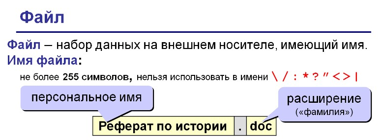

Задание 4. Прочитайте текст, запишите в конспект ответы на вопросы, используя навыки конспектирования:
4.1
Что такое форматирование? 4.2
Для чего нужно формтиарование? 4.3
Что происходит во время форматирования? 4.4
Если на флешке есть файлы фотографий, а вы отформатировали их, то что
произойдет с информацией??
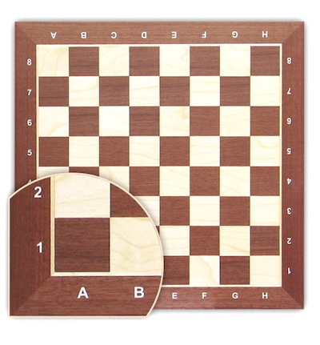
Форматирование – это процесс, во время которого происходит
разметка носителя информации, а точнее области хранения данных
носителя.
В компьютерной технике все данные
должны быть систематизированы и они должны находиться в определенных
областях носителя информации, для того чтобы программы могли их найти в
нужный момент.
Информация на компьютере хранится на носителях информации, например,
жестких дисках, флешках, CD или DVD дисках и т.д. Так же как и
шахматная доска, область хранения данных носителя информации должна
быть размечена.
Только в этом случае можно точно сказать, что какой-то фрагмент данных
находится по такому-то адресу, то есть как в шахматах – пешка
на
Е2 или ладья на А1.
Для того чтобы превратить
область хранения данных в своеобразную шахматную доску и
применяется процесс
форматирования.
Форматирование – это программный процесс во время
которого на поверхности носителя информации создается файловая
система, то есть создается
своеобразная логическая таблица, с помощью которой в будущем и будет
осуществляться доступ к определенным данным, хранящимся на диске.
Когда может понадобиться форматирование
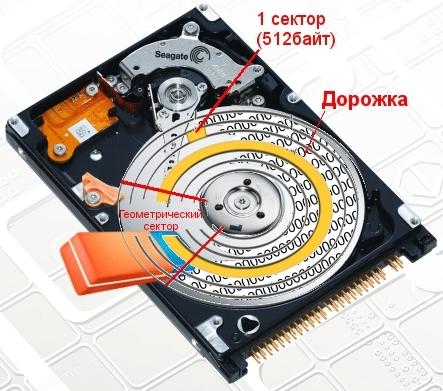 - новый жесткий диск, то вполне вероятно на нем еще нет файловой системы, то есть он неотформатирован.В
этом случае можно сделать форматирование, в результате чего на диске
будет создана файловая система и он будет готов к хранению информации.
- когда
файловая система устройства хранения информации была повреждена.
Что происходит во время форматирования
В
процессе форматирования происходит анализ целостности поверхности
устройства хранения информации и поврежденные области специальным
образом помечаются, что позволяет в дальнейшем не записывать в них
информацию. Часть
этой информации теряется безвозвратно, но есть специальные программы,
которые позволяют восстановить некоторую часть информации, находившуюся
в отформатированной области.
При форматировании будет разрушена старая файловая система и на ее
месте будет создана новая. Это означает, что все данные,
которые хранились на диске, будут
потеряны!
Этот процесс не очень простой и он зависит от множества различных
факторов, поэтому перед форматированием лучше лишний раз убедиться, что
на диске нет нужной информации, чем потом судорожно искать способы ее
восстановления.
Файловая система
Задание 5. Запишите в конспект:
5.1
Возможные имена корневого каталога? (смотри задание 1) 5.2
Что включает корневой каталог? 5.3
Когда и как создается корневой каталог? 5.4
Нарисуйте схему для каталога "Фото", если его родительский каталог
"Отдых" расположенный на диске D: в директории "Этот год". По аналогии,
со схемой представленной ниже 5.5
Какой каталог называется текущим? (Подумай и помотри на "дерево" каталогов на примере рисунка ниже.) 5.6
Что называют подкаталогом? (Подумай и помотри на "дерево" каталогов на
примере рисунка ниже.) 5.7
Определение файловой системы?
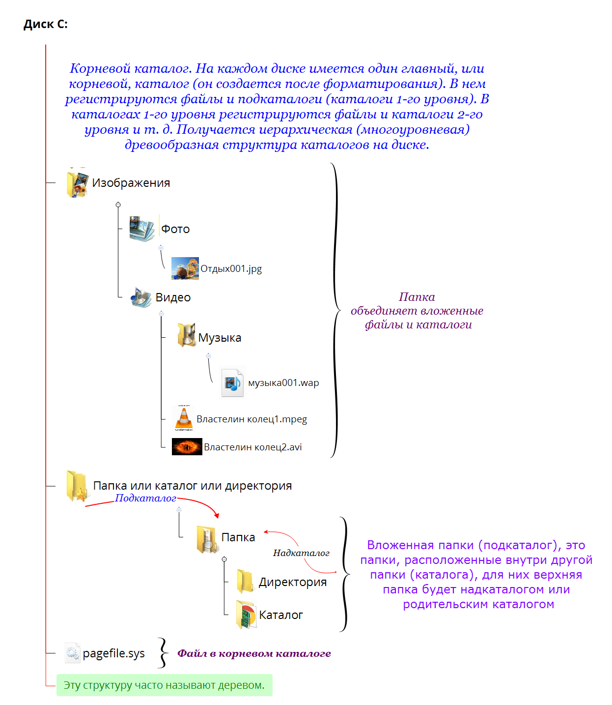
Словестное описание рисунка
Корневой каталог.
На каждом диске имеется один главный, или корневой, каталог (он создается после форматирования). Для его обозначения используют символ \ (обратный слеш). В нем регистрируются файлы и подкаталоги (каталоги 1-го уровня). В каталогах 1-го уровня регистрируются файлы и каталоги 2-го уровня и т. д. Получается иерархическая древообразная структура каталогов на диске. Эту структуру часто называют деревом.
Подкаталоги и надкаталоги.
Все каталоги, кроме корневого, на самом деле являются файлами специального вида. Каждый каталог имеет имя, и он может быть зарегистрирован в другом каталоге. Если каталог Х зарегистрирован в каталоге У, то говорят, что Х – подкаталог У, а У – надкаталог или родительский каталог для Х.
Текущий каталог
это каталог, с которым пользователь работает в данный момент.
Задание 6.
Запишите в конспект:
-
6.1 Из чего состоит путь/адрес к файлу?
-
6.2 Примером чего, может служить сюжет из сказки про Кащееву смерть: «На высокой горе стоит дуб, на дубе – сундук, в сундуке – заяц, в зайце – утка, в утке – яйцо, в том яйце – игла, на конце той иглы – смерть Кащеева?"
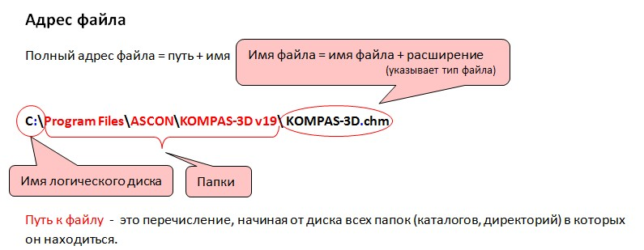
Имена каталогов и файлов в полном имени файла (pathname) отделяются обратной косой чертой (\) . Кроме правил формирования полного имени, действует и правила именования каталогов и файлов:
- - имена файлов и каталогов могут включать буквы разного регистра, но при поиске файлов и каталогов регистр букв не учитывается;
- - если файл с именем ReadMe.Txt существует, то создание нового файла с именем README.TXT уже не допускается.
Задание 7. Запишите в конспект имена только тех файлов, которые находятся в корневом каталоге
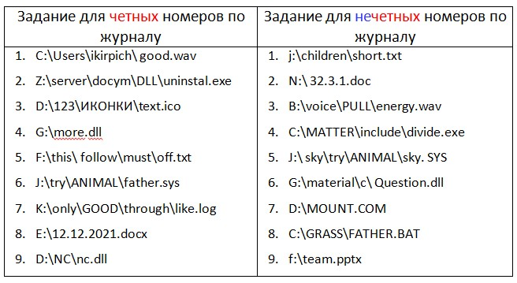
Задание 8. Запишите в конспект путь к файлам:
Четные номера по списку 1 вариант, остальные - 2 вариант
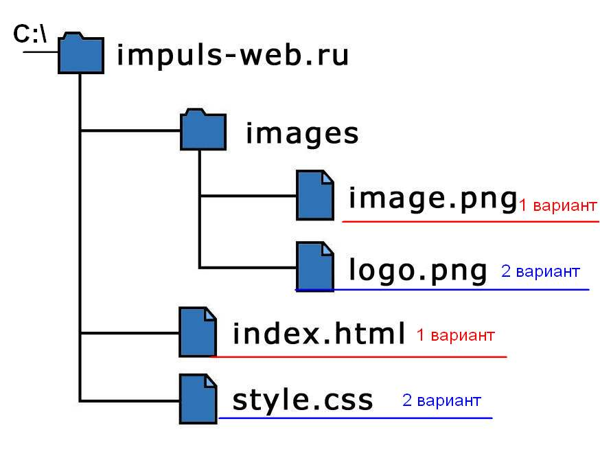
Задание 9. Запишите в конспект, что такое
маска файлов и значения
шаблонов файлов
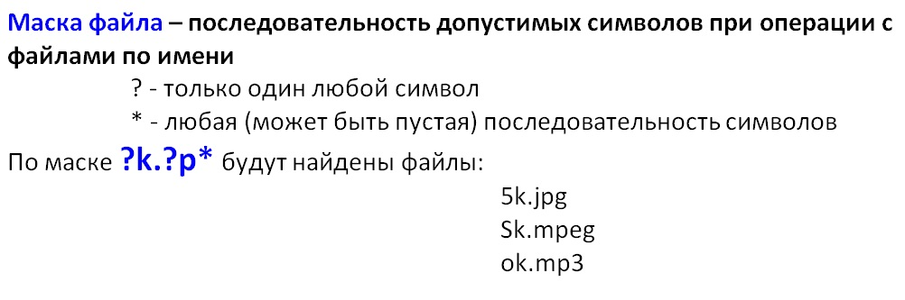
Задание:
Запишите, что
обозначают шаблоны
файлов
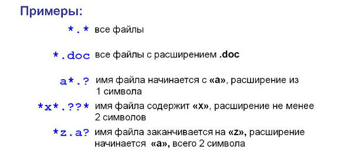
|
Номер
по журналу |
|||
|
9; 5;
12; 20; 16;
21; 25; 29;
33 |
1; 6;
4; 13; 17;
22; 26; 30;
34 |
2; 7;
11; 14; 18;
23; 27; 31;
35 |
3; 8;
10; 15; 19;
24; 28; 32;
36 |
|
Вариант 1 |
Вариант 2 |
Вариант 3 |
Вариант 4 |
|
*.jpg |
*.dll |
*.sys |
*.txt |
|
gind.* |
temp.* |
kold.* |
volder.* |
|
re*.* |
sy*.* |
mov*.* |
*del.* |
|
ask.??e |
djel.e?? |
gif.?x? |
doc.do?? |
|
kol??.bat |
cjk??s.bmp |
???dom.com |
??vid.jpg |
|
*do.??e |
*re.?x? |
*mi.?l? |
*fa.j??? |
|
Напишите маску
для выделения файлов: |
|||
|
Выделить все файлы, в
имени которых есть del с любым расширением |
Выделить все файлы,
имена которых начинаются с led и в расширении есть ex |
Выделить все файлы, в
имени которых есть tell с расширением 4
символа в котором есть ss |
Выделить все файлы,
имена которых оканчиваются на malk с расширением 3
символа |
Задание 10 Запишите в конспект:
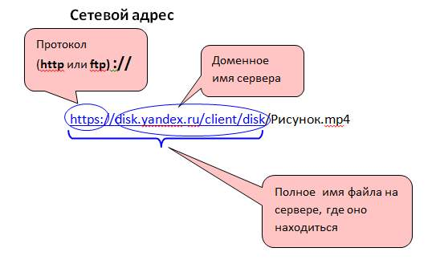
Задание 11. Запишите ответ в конспект: Какая папка является верхом графического интрефейса операционной системы Windows?
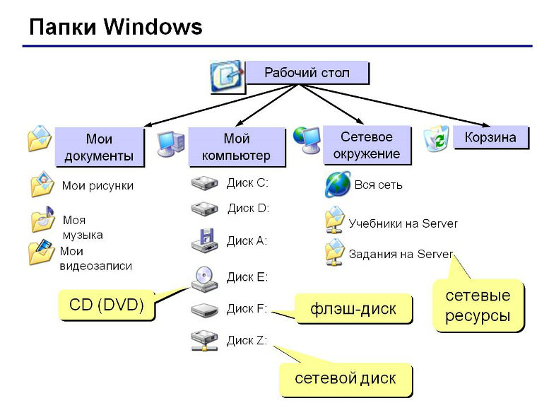
В Windows на вершине иерархии папок находится папка ........ Следующий уровень представлен папками Мой компьютер, Документы, Корзина и Сетевое окружение (если компьютер подключен к локальной сети)
Какая папка является вершиной иерархической файловой системы диска? system32
Для справки
System32 - это папка, включенная в каждую версию Windows с Windows 2000. Она находится в C:\Windows\System32 и включает в себя всевозможные файлы и папки, которые жизненно важны для нормальной работы самой Windows( в ней находятся все "внутренности").
Задание 12. Запустите программу, которая находяться в каталоге 1_Semestr дальнейшее местонахождение программы определите по указаному пути к файлу: 1_semestr\tema_5\files.exe
Выполните все задания.
Внимание! Перед тем как переходить к следующему заданию, сделайте скринн (PrtSck) экрана, вставьте его в документ Word, сохраните документ в своей папке. Покажите файл с скринами преподавателю.
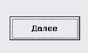
Задание 13.
Оформите сравнение файловых систем
в таблице
FAT32:
Совместимость: Windows, MacOS, Linux, игровые консоли и устройства с USB-портом.
Плюсы: кросс-платформенная совместимость, легкая файловая система.
Минусы: ограничения в размерах файлов (доступны документы до 4 Гб) и размеры разделов до 16 Тб. Назначение: съемные накопители. Используется для форматирования Flash-накопителей, однако exFAT предпочтительнее.
exFAT: Совместимость: Windows XP и более поздние версии, MacOS 10.6.5 и выше, Linux (с использованием FUSE), Android.Плюсы: имеет общие положительные эффекты от FAT32 и NTFS, которые включают в себя возможность хранения файлов, размером свыше 4 Гб.
Минусы: Microsoft ограничивают использование лицензии. Назначение: позволяет исключить ограничения по размеру файлов для съемных накопителей. Гораздо предпочтительнее своего предшественника FAT32. Разница между файловыми системами «NTFS», «FAT», «FAT32» и «exFAT»
Файловая система «FAT» создавалась первоначально для накопителей незначительного объема и способна поддерживать граничные размеры файлов до четырех гигабайт, в то время как в системе «NTFS» допустимый предел размера увеличен до шестнадцати терабайт.
NTFS:
Совместимость: Windows, MacOS (доступно только чтение), Linux (только чтение для некоторых дистрибутивов), Xbox One.
Плюсы: отсутствие ограничений по размеру файлов и разделов.
Минусы: ограниченная межплатформенная совместимость.
Назначение: хорошо подходит для внутренних жестких дисков, поскольку позволяет хранить информацию большого объема, справиться с которым другие файловые системы не смогут.
Основной файловой системой Windows 95/98 является FAT. FAT позволяет присваивать каталогам и файлам имена до 255 символов длиной. Эти имена хранятся на диске в кодировке Unicode, а это значит, что они не нарушаются при копировании в системы использующие другие языки. Еще одна особенность файловой системы FAT в том, что с каждым файлом в ней связаны 3 временные метки: время создания файла, время последнего к нему обращения и время последней модификации.
Windows NT поддерживает не только FAT, но и NTFS, которая совместима с FAT и имеет свои дополнительные особенности. NTFS позволяет восстанавливать данные после сбоя системы, работает с внешними носителями высокой емкости, различает регистр букв в именах файлов. В NTFS добавлены средства защиты файлов от вирусов (введен атрибут файла только для исполнения).
Поскольку Win32 поддерживает несколько файловых систем, все они должны подчинятся общим правилам. Файловые системы должна организовывать файлы в иерархическое дерево каталогов – так, как это делает FAT.
«FAT» Не совместим с последней версией операционной системы «Windows». Поддержка дисков от тридцати двух мегабайт до двух терабайт. Более сильные преимущества и результативные особенности инструментов для восстановления.
Не удается установить новейшие версии операционной системы «Windows» (поскольку файл имеет большой размер и может быть установлен только на диски, отформатированные в системе «NTFS»). «exFAT» Доступ к дискам с файловой системой «exFAT» в операционной системе «Linux» можно получить только после установки соответствующего программного обеспечения.
Работает со всеми версиями операционной системы «Windows» и современными версиями системы «Mac OS X». ext2-4 (Second Extended File System) – стандарт в мире Linux
Далее подробнее представлены другие отличия: «NTFS» Поддержка файлов и дисков значительных размеров, на порядок превышающие остальные файловые системы.
Позволяет использовать расширенные имена файлов, включая поддержку множества сложных языков. Падение работоспособности системы при запуске приложения проверки жёсткого диска или внешнего накопителя на ошибки файловой системы «chkdsk».
Стандартное приложение обслуживания системы «chkdsk» печально известно своей медлительностью. Повышен уровень безопасности благодаря внедрению метода шифрования файлов.
Значительно быстрее на дисках объемом менее сорока гигабайт. Меньшие файловые кластеры. Поддержка сжатия на уровне файловой системы для файлов, каталогов и дисков для уменьшения дискового пространства. Пользовательские разрешения для файлов и папок. Копии файлов «отменяются», если прерванный кластер очищен. Небольшие файлы хранятся в главной таблице файлов в начале диска.